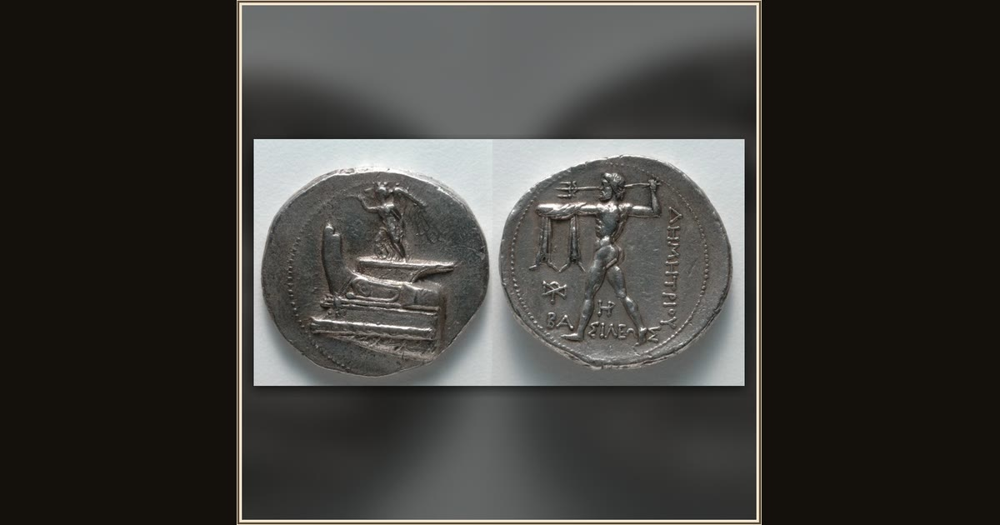

Tetradrachm: Nike on Ship's Prow (obverse); Poseidon (reverse)
Unknown · c. 300–295 BCE · Cleveland Museum of Art · Cleveland, USA
One side places Victory on a warship’s prow and the other shows Poseidon with his trident, joining the sea-god to the ships under his power. Explore its place in Book I of the Odyssey.